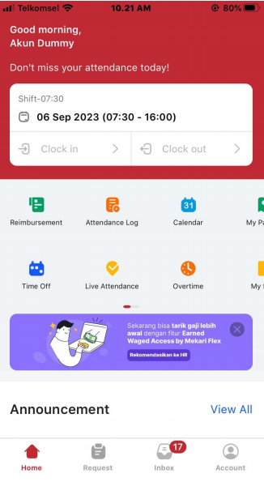

Fungsi Fitur Sistem HRIS

- Wajib absen masuk menggunakan fitur Clock in dan dilakukan di lokasi penempatan kerja yang sesuai dengan ketentuan.
- Wajib absen keluar menggunakan fitur Clock out dan dilakukan di lokasi penempatan kerja yang sesuai dengan ketentuan.
- Fitur Attendance Log untuk melihat riwayat kehadiran per hari dan per bulan.
- Fitur Calendar untuk melihat karyawan yang sedang ulang tahun maupun sedang cuti.
- Fitur Time Off untuk pengajuan cuti, izin, dan sakit.
- Fitur Live Attendance pada dasarnya sama dengan fitur clock in dan clock out.
- Fitur Overtime (Lembur) untuk melakukan pengajuan lembur (overtime).
- Jika lembur dilakukan setelah shift berakhir, maka pengajuan lembur dapat dicantumkan pada kolom Overtime after shift.
- Jika lembur dilakukan sebelum shift mulai, maka pengajuan lembur dapat dicantumkan pada kolom Overtime before shift.
- Lembur wajib diajukan maksimal H-1 di dalam HRIS dan wajib mendapatkan persetujuan dari Atasan Langsung.
- Lembur wajib berdasarkan perintah dari Atasan Langsung. Apabila tidak ada perintah dari Atasan dan alasan lembur tidak jelas, maka Atasan Langsung dapat menolak pengajuan lembur tersebut.
- Fitur Request untuk melakukan pengajuan time off, kehadiran, perubahan shift (change shift), lembur, maupun perubahan data karyawan.
Panduan Cek Riwayat Kehadiran

- Klik attendance log
- Apabila pada riwayat kehadiran tersebut terdapat absen yang tidak terisi